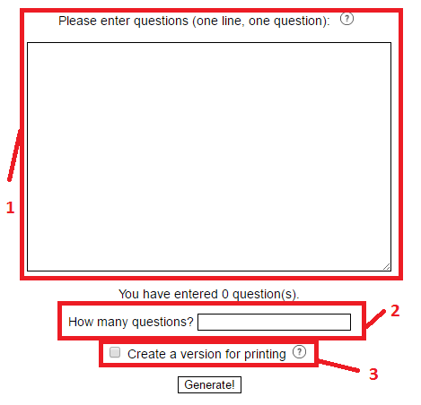

What's new in current version
- Version for printing

Look at Fig. 1. You can see the screen we will be working with. In the red box number 1, there is a text area, where you can enter your questions. It can be a single word, a phrase or a question. Remember, one line, one question. If the question doesn't fit to the textbox, just grab the lower right corner and widen it.
In the red box number 2, there is a box asking how many questions. Exam Generator generates random exam from questions you have entered. Please, enter how many questions you want in your exam.
In the red box number 3, there is a checkbox asking if you wish to have a version for printing generated. If the checkbox is checked, a version for printing will be opened in new tab. If not checked, your exam
will be written in the textbox below this part of screen. The small  buttons will be explained further in this document. Now you've set parameters,
so hit the Generate! button to run the application.
buttons will be explained further in this document. Now you've set parameters,
so hit the Generate! button to run the application.